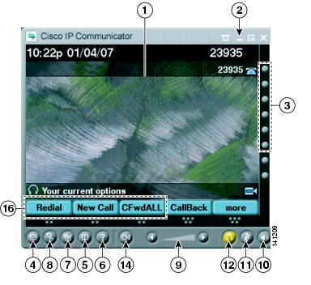
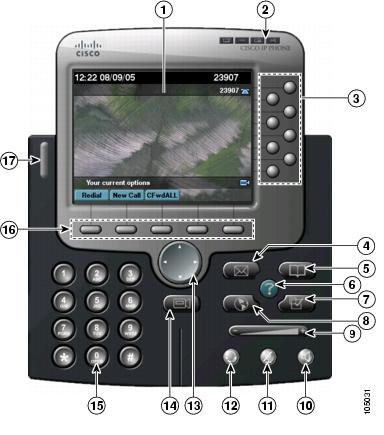

Knoppen en andere onderdelen
In Tabel 2-2 wordt uitleg gegeven over de knoppen en andere onderdelen die u in beide weergaven vindt.
Afbeelding 2-1 Cisco IP Communicator in de compacte modus

Afbeelding 2-2 Cisco IP Communicator in de standaardmodus

1
Telefoonscherm
Hierop kunt u de status van gesprekken en de functiemenu's bekijken en items activeren. Zie Functies van telefoonscherm.
2
Beheerknoppen voor het venster
Hiermee kunt u het menu weergeven, de interface van Cisco IP Communicator verbergen, wisselen tussen weergaven of de toepassing afsluiten. Zie Beschikbaarheid en werking van functies.
3
Programmeerbare knoppen
Afhankelijk van de configuratie bieden programmeerbare knoppen toegang tot:
De status wordt aangegeven door middel van de lampjes:
- Groen, continu brandend: actief gesprek of tweerichtingsintercomgesprek
- Groen, knipperend: gesprek in wachtstand
- Oranje, continu brandend: eenrichtingsintercomgesprek of NST actief
- Oranje, knipperend: binnenkomend of terugverwezen gesprek
- Rood, continu brandend: externe lijn in gebruik (gedeelde lijn of BLF-status)
U kunt extra lijnknoppen gebruiken als snelkeuzeknoppen. Zie Snelkeuzenummers instellen.
4
Knop Berichten
Hiermee wordt automatisch uw voicemailservice gebeld (afhankelijk van de service). (Ctrl + M is de sneltoets.) Zie Voicemailberichten beluisteren.
5
Knop Telefoonlijsten
Hiermee opent of sluit u het menu Telefoonlijsten. Hiermee kunt u een logboek met gesprekken bekijken of een nummer kiezen vanuit een logboek of een bedrijfstelefoonlijst. (Ctrl + D is de sneltoets.) U kunt ook de functie Snel zoeken (Alt + K) gebruiken om te zoeken in telefoonlijsten. Zie Logboeken met gesprekken gebruiken.
6
Knop Help
Hiermee opent u het menu Help. (Ctrl + I is de sneltoets.) Zie De online Help openen.
7
Knop Instellingen
Hiermee opent of sluit u het menu Instellingen. Gebruik deze knop om instellingen met betrekking tot het tipscherm en de beltoon te wijzigen. (Ctrl + S is de sneltoets.) Zie Het aantal malen overgaan en berichtlampjes aanpassen.
8
Knop Services
Hiermee opent of sluit u het menu Services. (Ctrl+ R is de sneltoets.) Zie Telefoonservices instellen.
9
Knop Volume
Hiermee kunt u het volume van de audiomodus en andere instellingen aanpassen. (Page up/Page down zijn de sneltoetsen). Zie Het volume voor een gesprek aanpassen.1
10
Knop Luidspreker
Hiermee schakelt u de luidspreker in of uit. Wanneer de luidspreker is ingeschakeld, brandt het lampje. (Ctrl+ P is de sneltoets.) Zie Headsets en andere audioapparaten gebruiken met Cisco IP Communicator.
11
Knop Dempen
Hiermee schakelt u de functie Dempen in of uit. Wanneer deze functie is ingeschakeld, brandt het lampje. (Ctrl+ T is de sneltoets.) Zie De functie Dempen gebruiken.
12
Knop Headset
Hiermee kunt u de headsetmodus in- en uitschakelen. (Ctrl+ H is de sneltoets.) Zie Headsets en andere audioapparaten gebruiken met Cisco IP Communicator.
13
Knop Navigatie
Hiermee kunt u door menu's bladeren en opties markeren. Gebruik deze knop samen met functietoetsen om gemarkeerde opties te activeren. Terwijl de hoorn van Cisco IP Communicator op de haak ligt, kunt u op de navigatieknop drukken om toegang te krijgen tot telefoonnummers in het logboek met gevoerde gesprekken.
14
Knop Cisco Unified Video Advantage
Hiermee wordt Cisco Unified Video Advantage gestart. U moet Cisco Unified Video Advantage versie 2.1.1 en Cisco IP Communicator versie 2.0 (of hoger) op dezelfde computer uitvoeren om deze functie te kunnen gebruiken.2
15
Toetsenblok
Hiermee kunt u cijfers en letters invoeren en menuopties kiezen. (Niet beschikbaar voor de optionele weergave.) U kunt ook het toetsenbord van de computer gebruiken.
16
Functietoetsknop pen
Met elke knop kunt u een functietoets activeren. U kunt ook op de functietoetslabels klikken (in plaats van de knoppen) om functietoetsen te activeren. (F2 - F6 zijn de sneltoetsen.) Zie Gesprekken afhandelen met Cisco IP Communicator.
17
Voicemaillampje en lampje voor overgaan van telefoon
Hiermee wordt een binnenkomend gesprek en een nieuw voicemailbericht aangegeven. Zie Het aantal malen overgaan en berichtlampjes aanpassen.
1In alle versies lager dan versie 2.0 is de sneltoets Ctrl + V.
2Wanneer Cisco IP Communicator gebruikmaakt van het SIP-protocol voor gespreksbeheer, wordt video met Cisco Unified Video Advantage niet ondersteund. De systeembeheerder kan u vertellen of video in uw omgeving wordt ondersteund.
Tips
- U kunt op het menupictogram boven aan de weergaven klikken, klikken met de rechtermuisknop in de interface van Cisco IP Communicator of Shift + F10 gebruiken om instellingen weer te geven en te configureren, weergaven te kiezen en de modus Alleen scherm in te schakelen. Zie Het menu gebruiken.
- In de standaardmodus (Afbeelding 2-2) en de compacte modus (Afbeelding 2-1) wordt dezelfde set knoppictogrammen gebruikt. De vorm en locatie van de knoppen kan echter verschillen per weergave.
- Zie Werken met sneltoetsen voor een complete lijst met navigatiesneltoetsen.
- Zie Functies van telefoonscherm voor meer informatie over het weergeven van gesprekken en lijnen op het telefoonscherm van Cisco IP Communicator.
Copyright © 2009 Cisco Systems, Inc. Alle rechten voorbehouden.